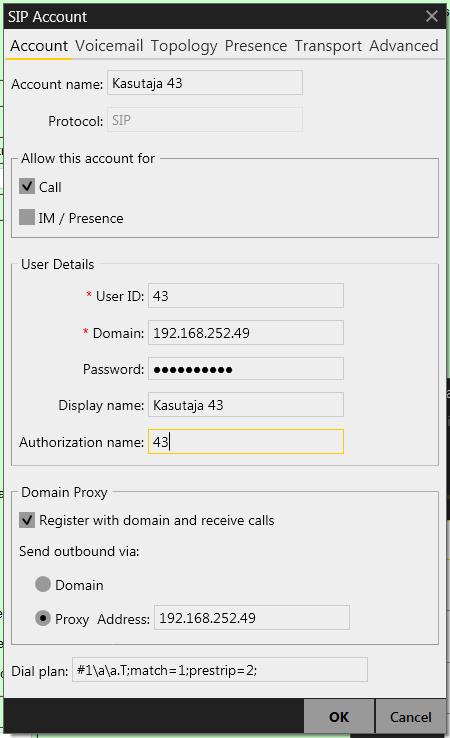
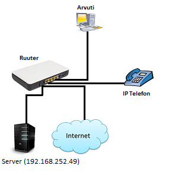
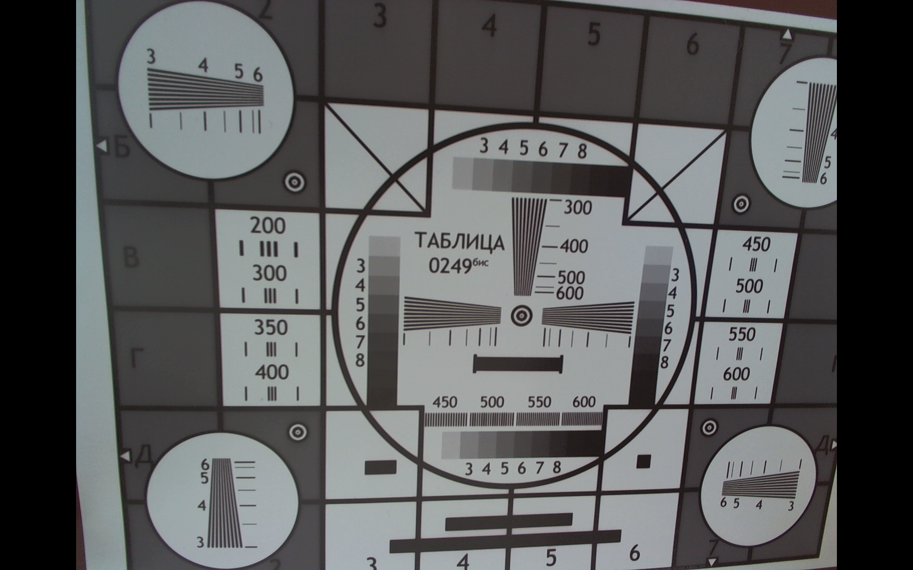
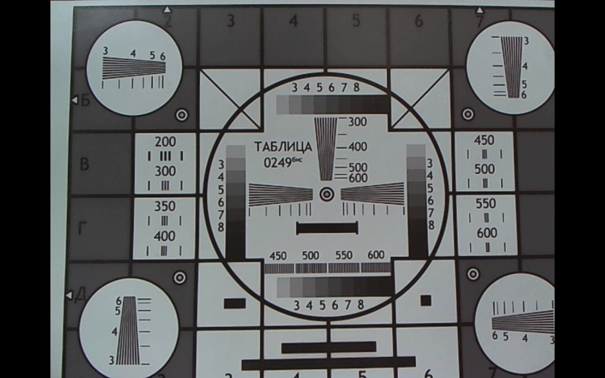
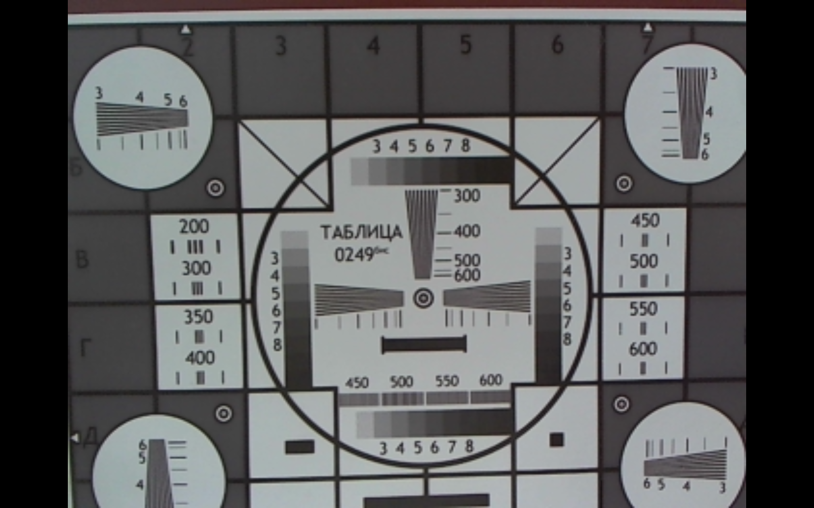
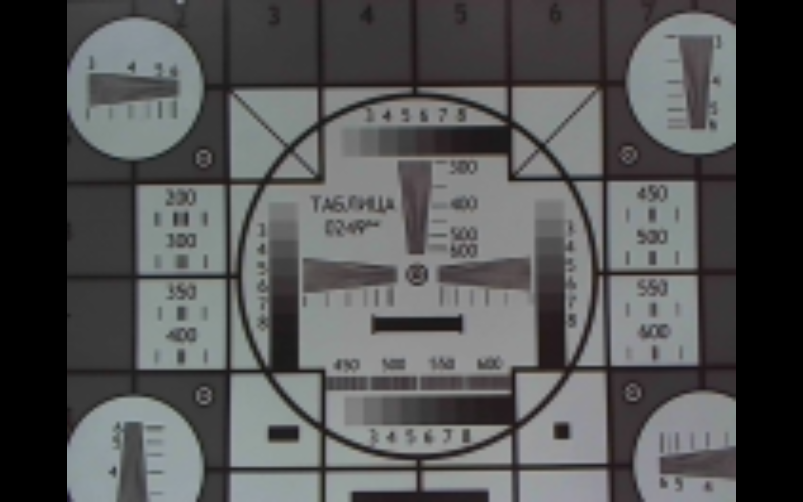
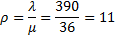
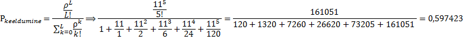

| Töö tegijate nimed: |
| Joel Pupart |
| Heigo Kruusimaa |
| Töö tegemise kuupäev: Thu Sep 25 10:35:05 2014 |
| Seadistamine | IP-telefon | Arvutitelefon |
| Telefoninumber | 44 | 43 |
| seadistuse ekraanipilt | |
 |
| Selgitada seadistuse eesmärke | Ühendada omavahel arvuti-ja IP-telefon. | |
|  | ||
Küsimus 2: Millise käsuga saab kumbki osapool kõne ajal videost loobuda?
Vastus:
Stop Video/Stop sending your video.
Küsimus 2: Kuidas töötab tingimusteta suunamine?
Vastus:
Kõne läheb kohe teisele telefonile.
Küsimus 3: Kuidas töötab tingimustega suunamine?
Vastus:
Kõne suunatakse ainult siis kui helistatav telefon on hõivatud.
Küsimus 2: Võrrelda video kvaliteeti Frame Rate: 5 frames/second ja Frame Rate: 15 frames/second.
Vastus:
15 FPS peal on pilt tunduvalt sujuvam.
| Suurim võimalik | eraldusvõime hinnang | eraldusvõime | kaadrisagedus | sisu bitikiirus | Arvutada pakkimata video edastuskiirus |
| Jooned eristatavad ka 600 grupis. | 2592x1944 | 10 | 600000 kb/s |
2592 x 1944 = 5038848
5038848 x 12 = 60466176 60466176 x 10 = 604661760 b/s = 604 662 kb/s |
|
|  | |||||
| VGA | eraldusvõime hinnang | eraldusvõime | kaadrisagedus | sisu bitikiirus | Arvutada pakkimata video edastuskiirus |
| Jooned olid eristatav kuni 400-ni. | 640x480 | 30.000030 | 90000 kb/s |
640 x 480 = 307200
307200 x 12 = 3686400 3686400 x 30.000030 = 110592110 b/s = 110 592 kb/s |
|
|  | |||||
| CIF | eraldusvõime hinnang | eraldusvõime | kaadrisagedus | sisu bitikiirus | Arvutada pakkimata video edastuskiirus |
| Jooned eristatavad umbes 300-ni. | 352x288 | 30.000030 | 30000 kb/s |
352 x 288 = 101376
101376 x 12 = 1216512 1216512 x 30.000030 = 36495396 b/s = 36 496 kb/s |
|
|  | |||||
| QCIF | eraldusvõime hinnang | eraldusvõime | kaadrisagedus | sisu bitikiirus | Arvutada pakkimata video edastuskiirus |
| Jooned ei olnud üheski grupis eristatavad. | 176x144 | 30.000030 | 10500 kb/s |
176 x 144 = 25344
25344 x 12 = 304128 304128 x 30.000030 = 9123849 b/s = 9 124 kb/s |
|
|  | |||||
Valin andmed tabelist vastavalt matrikli numbrile 134493.
Abonentide arv N = 130, välisliinide arv L = 5.
Ühe abonendi poolt tunnis linna tehtavate kõnede keskmine arv n = 3, ühe kõne keskmine kestus sekundites t = 100.
Otsitava tõenäosuse leidmiseks kasutame Erlangi valemit:

kus ρ on sisendvoo taandatud intensiivsus, mis avaldub kujul 
Esmalt arvutame sisendvoo: λ = N * n = 130 * 3 = 390 linnakõnet tunnis.
Ühe teenindaja jõudlus ehk väljundvoog:
linnakõnet minutis.
Sisendvoo taandatud intensiivsus ühe teenindaja kohta:

erlangi.
Blokeerumise tõenäosus ehk kõik teenindajad (välisliinid) on hõivatud ja Teid ei teenindata arvutatakse Erlangi valemi järgi:

See tähendab, et kümnest kõnesoovist kuuel juhul on välisliinid hõivatud.
Teises praktikumis õppisime kuidas IP telefoni ühendada arvutiga/serveriga ning seadistada nii IP telefoni kui arvuti enda VoIP tarkvara, et saaksime nende vahel edukalt ühendust pidada.
Õppisime ning proovisime järele erinevaid IP telefoni poolt pakutavaid võimalusi: praeguse aja ning enda numbri pärimist, IP telefoni olekuid, videokõne, konverentskõne, kõneposti kuulamist,
kõne suunamise meetodeid ning hindasime IP telefoni videokaamerat ja arvuti veebikaamera kvaliteeti.
Iseseisva tööna arvutasime välja veebikaamera pakkimata video edastuskiiruse erinevatel resolutsioonidel ning arvutasime Erlangi valemi abil etteantud tinguimustel liini hõivatuse
tõenäosuse.